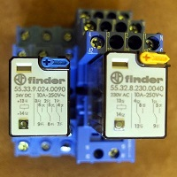
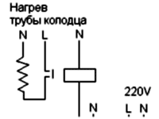
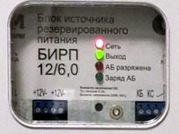
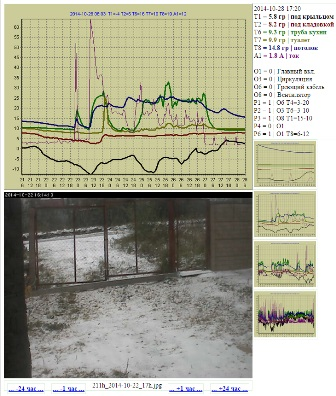

Контроллер ВМ8036 для умного дома
ВМ8036 - это не специальный контроллер для умного дома, а продвинутый термостат . Он позволяет измерять температуру в 10-20 точках, и включать 8 исполнительных устройств в зависимости от разных температурных условий или по расписанию.
Реле finder, 24VDC и 220VAC

Ещё до выбора контроллера я сделал, чтобы освещение, батареи и насосы включались при помощи реле. Реле с питанием 24 вольта хороши ещё тем, что позволяют сделать слаботочные выключатели . Я использую реле Finder c 3 группами контактов по 10А. К выключателям подходит провод UTP (витая пара).
Все кабели UTP (от компьютеров, датчиков, выключателей) собираются в кроссе на панели типа 110 .
К каждой лампочке от щитка 220в идёт неразрывный провод NYM. Выключатели освещения - двойные Легранд в стиле Анам с большими клавишами.
Я думаю, что такая система повышает безопасность. Нет искрения, и даже необязательно выключать ток при перемонтаже выключателя. Удобно менять логику. Например, можно легко включать освещение на веранде каким-нибудь выключателем второго этажа. Также легко организуется главный выключатель около двери.
Перед выходом из дома главным выключателем отключается весь свет, отопление (кроме страховочного), насос водопровода и прочее. В системе есть также главный включатель , который включает все эти системы через интернет.
На свободные пары UTP прямо внутри выключателя можно подключить датчик температуры комнаты. Температуру измеряет контроллер BM8036.
При снижении температуры в подвале до +3 градусов контролер ВМ8036 через реле 220в включает подогрев трубы колодца, через которую поступает вода в домашний водопровод, и подогрев ещё нескольких труб (вода и канализация) под полом. Эти трубы без обогрева, теоретически, могут замёрзнуть зимой.
Подключение нагревателя
и датчика температуры

Наш колодец глубиной всего 2.5 метра, так как уровень грунтовых вод совпадает с уровнем земли. Из за этого движение воды в грунте продолжается всю зиму. Опыт показал, что при хорошем утеплении фундамента на зиму температура под полом остаётся выше нуля даже в самые морозные зимы, когда вода в колодце промерзает на метр. Подогрев труб нужен только для страховки. В первое время, когда колодец и фундамент дома ещё не были утеплёны пенопластом, и вентиляционные отверстия фундамента не были хорошо закрыты, труба колодца реально замёрзла. Тогда я включил греющий кабель на всю зиму. Сейчас он включается когда температура трубы снижается до +3 градусов. При достижении +15 градусов кабель отключается. Это экономнее.

{kind=link}
{kind=link}
{kind=link}
{kind=link}
Контроллер ВМ8036 используется для
- защиты от замерзания труб под полом,
- дистанционного включения обогрева дома,
- перезапуска роутера (он иногда без причин зависает),
- измерения температуры в наиболее ответственных местах,
- измерения потребляемой домом мощности. Мощность измеряет
счётчик, а я
подключаю импульсный выход счётчика к аналоговому
входу контроллера через простой ЦАП.
Роутер с 3G-модемом Мегафон обеспечивает постоянный, хотя и медленный интернет. Качество связи достаточное, чтобы передавать графики на сайт, принимать команды включения отопления и даже для дистанционной настройки контроллера. В качестве сервера используется нетбук Asus-EeePc-901. Кроме работы с контроллером и интернетом, сервер пишет видео с IP-камеры на флешку.

Для защиты от перебоев сети 220в роутер и нетбук питаются от БИРП 12в-6А с аккумулятором 22 а-ч. При пропадании электричества заряда хватает на 8 часов.
Реле используются также в схеме ограничения тока, которая отключает часть батарей отопления на время работы насоса в колодце или при включении нагрева воды. Это позволяет уложиться в заданные ограничения по току.
Так выглядит веб страничка дачи

{kind=link}
Для связи контроллера с компьютером и для вывода графиков на страничку в интернете используется самодельная программа da4a8036. В архиве rar находится файл программы и файл настройки. Помещаете эти 2 файла в одну папку, указываете нужные параметры в файле настройки, подключаете ваш контроллер ВМ8036 через ком-порт к компьютеру, и запускаете программу. Она будет сохранять температуру и аналоговые данные, готовить веб-страничку и графики, и отправлять их на указанный вами адрес ftp. Для дистанционного включения отопления вашего дома эту же программу надо установить на другой компьютер, выбрать в меню пункт Remote control, и ввести команду вроде P4="1", что означает "активировать программу 4 контроллера". Команда отправляется на ваш сайт, оттуда она будет прочитана программой da4a8036 и выполнена контроллером. Практически, я не использую функцию программы для удалённого включения отопления. Вместо этого у меня на сайте дачи есть интерактивная страничка.
Без особых комментариев перечислю ещё важные, по моему мнению, вопросы по дому, контроллеру и автоматизации.
- Для уменьшения износа реле используйте все контакты реле параллельно
- Для контроля суммарной потребляемой мощности можно использовать схему, измеряющую частоту импульсов сигнального выхода счётчика.
- При наличии 3х фаз делайте 3 шкафа разводки 220в. Практически шкафов может быть больше. Их надо разделять по функциям: отопление, освещение, улица, бесперебойное питание и т.д.
- В режиме
отсутствие отключаются:
- отопление,
- насос водопровода,
- освещение
Главный выключатель около входной двери включает и выключает все эти системы. Главный включатель включает эти системы через контроллер.
Большинство систем (дренажный насос, насос пруда, розетки) отключаются только в ручную. - Для защиты автоматики и связи от сбоя 220в не используйте UPS. Используйте оборудование на 12 или 24в и БИРП . Он отличается от большинства других источников бесперебойного питания тем, что выходное напряжение при наличии и отсутствии 220в одинаково.
- Автоматика без контроллера
- схема ограничения тока
- отключение воды при протечке
- датчики движения для включения света в коридоре, туалете, сарае
- поддержание более 5 градусов в помещении
- сброс роутера и контроллера раз в сутки
- отдельный охранно-пожарный прибор с отдельным каналом связи - Автоматика уровня контроллера
- Защита труб под полом от замерзания
- Включение вентиляции подвала, когда тепло
- Включение главного включателя по команде от РС
- Включение главного включателя, если система поддержания 5 градусов не справляется - Автоматика уровня выше контроллера
- Подготовка и отправка файлов на сайт
- Получение команд с сайта и передача контроллеру
- Перезапуск роутера при сбое связи
- Перезапуск сервера раз в сутки
- Запись видео с IP-камеры
- Отправка фото с камеры по почте или на сайт